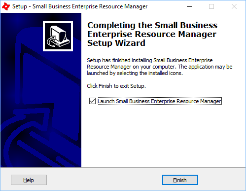

Finish
Previous
Top
ERM is now ready to use, you can tick the box to launch (start) the ERM to continue.

Please note that in some circumstances, when installation is complete you may have to restart your computer for the changes to take effect.